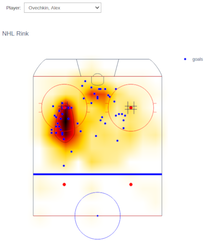
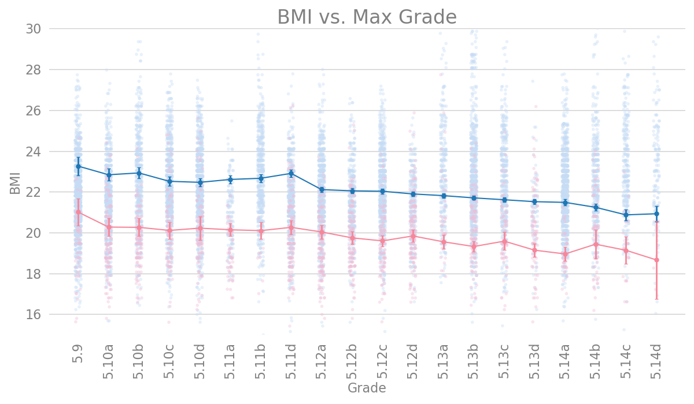

Portfolio
Hockey Analytics
Visualizing the Distribution of Hockey Statistics using Heatmaps
This was an incredibly fun project. I had always wanted to see what the distribution of shots and goals looked like, but had never seen the visualization that I had envisioned in my mind. This project was my chance to realize my vision.
This project is best viewed here. The heatmap is interactive, and you can select if you want a view a Season of data, or an individual random game, or an individual player.
The project was completed in Jupyter Notebooks and uses plotly to draw the rink surface and generate the heat map. I hope you take the opportunity to build this project yourself with the notebook I have provided so that you can play around with the interface and enjoy it as I have. Additional screen shots are available on the GitHub README.md, where you can also find all of the source code to replicate the project.

Image Classification
Differentiating Images of Dogs and Cats using a Convolutional Neural Network and Google Cloud's Deep Learning VM Image
The objective of our team for this project was to learn about image classification while leveraging the Google Cloud Platform.
We designed and built a Convolutional Neural Network (CNN) in Python using TensorFlow and Keras to classify images of cats and dogs. As our objective was to learn image classification we designed our convolutional neural network from scratch without leveraging transfer learning. We went through a number of iterations during this process until arriving at our final solution achieving an accuracy of 97% after taking advantage of learning rate scheduling and data augmentation.
Cats vs Dogs is a beautiful data set for image classification and we hope you enjoy our solution.
Logistic Regression Analysis
Predicting the Outcome of National Hockey League Games
The goal of this team project was create a Logistic Regression model to predict the winner of NHL hockey games. We recognized this as a challenging project with many obstacles and no data that was readily available to achieve our goal, but hockey is a major interest of our team and we wanted to explore logistic regression within a domain of interest.
There are two main components to this project:
- Preprocessing of data to prepare it for modelling. (Python)
- Building the logistic regression model. (R)
The final report that my team submitted can be accessed directly here. Additionally, all of the supporting code and analysis can be found at the project GitHub repository. The repo provides additional information and a better insight into the work required to build the Logistic Regression model.
Data Journalism
Analyzing Rock Climbing Data
There are two parts to this project:
- Data Story on medium.com. The objective of this project was to tell a data story so the story does not contain any of the source code
- The source code for data cleaning, wrangling and analysis performed in support of the data story can be found at the github repository.
The original data for this story can be found at Kaggle and it was collected from the website 8a.nu on 9/13/2017 by David Cohen. I owe a large thanks to David for creating the dataset as without it this project wouldn't be possible.
